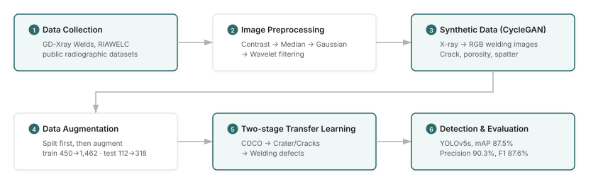

Welding Defect Detection
Detecting welding defects using CycleGAN-generated synthetic data and YOLOv5 with two-stage transfer learning, working around the absence of real defect datasets in manufacturing.
problem
Welding is a critical manufacturing process where defects can degrade product performance or, in severe cases, cause safety hazards. Traditional inspection relies on visual examination and non-destructive testing, methods that are time-consuming, costly, and highly dependent on the inspector's individual experience and skill.
Deep learning offers a path toward automated defect detection, but training such models requires large, high-quality datasets. In welding, this data simply does not exist publicly: real defect images are restricted due to security concerns and the high cost of collecting them on the shop floor.
The core insight: we couldn't collect the data, so we manufactured it. Rather than waiting for access to restricted real-world defect images, we repurposed publicly available X-ray radiographs, using them as a structural proxy for defect geometry, and used CycleGAN to translate them into the RGB visual domain of actual welding environments. The research contribution isn't just the detection accuracy; it's the design of a data generation pipeline that sidesteps a fundamental access barrier.
methodology
The core challenge was generating realistic training data without access to real defect images. We designed a pipeline that transforms publicly available X-ray radiographs into RGB welding inspection images, then trains a detection model through progressive domain adaptation.

Data collection
Sourced welding radiograph images from two public datasets: GD-Xray Welds and RIAWELC. These grayscale X-ray images contain labelled defects but differ significantly from the RGB camera images used in actual inspection environments.
Image preprocessing
Applied a four-stage preprocessing pipeline: contrast enhancement to reveal structural details, followed by median filtering (edge-preserving noise removal), Gaussian filtering (overall noise reduction), and wavelet filtering (frequency-level feature refinement). This sequence preserved critical defect features while suppressing artifacts. The sequence was chosen by visual comparison, not measured.

original

contrast

Gaussian

wavelet

median

all applied
Effect of each preprocessing stage on a radiograph image. The final image (all applied) combines all four filters and is the input to CycleGAN translation.
Synthetic data generation
Used CycleGAN to translate preprocessed grayscale radiographs into realistic RGB welding images. Generated three defect classes (crack, porosity and spatter), each reflecting the visual characteristics of real welding defects. CycleGAN's unpaired training capability was key, as no paired radiograph-to-RGB data existed.

crack

porosity

spatter
X-ray radiograph (left) → CycleGAN-generated RGB synthetic image (right) for each defect class. Unpaired image translation enables domain adaptation without matched training pairs.
Data augmentation
The data was split before augmentation. The 450 base training images were augmented to 1,462, and the 112 base test images to 318, to improve generalisation and reduce overfitting risk.
Two-stage transfer learning
Trained YOLOv5s in three phases: (1) pre-training on COCO for general visual features, (2) intermediate fine-tuning on two morphologically analogous datasets, a Lunar Crater dataset whose circular depression shapes closely resemble welding porosity and a Building Defects dataset of concrete and structural cracks that mirror welding crack geometry, and (3) final fine-tuning on our synthetic welding defect data. The strategy exploits cross-domain visual analogy: by finding shapes in non-welding domains that look like welding defects, we give the model a stepping stone between general visual knowledge and welding-specific recognition. This is why two-stage transfer outperforms jumping directly to the target domain.
Detection & evaluation
Evaluated YOLOv5s performance across four training conditions using mAP, precision, recall and F1 score. All images processed at 256×256 resolution on NVIDIA RTX A6000 GPUs.

Design rationale: two-stage transfer learning bridges the domain gap progressively. COCO provides general visual features, crater/crack datasets introduce defect-like patterns, and the final stage specialises for welding. This staged approach yielded a +9.1 pp mAP improvement over training without transfer learning.
Methods & tools
- CycleGAN
- YOLOv5s
- Transfer learning
- Domain adaptation
- Wavelet filtering
- Data augmentation
- NVIDIA RTX A6000
key findings
All metrics are on a held-out set of 318 CycleGAN-generated images, not real welding photographs.
- 01
Two-stage transfer learning achieves 87.5% mAP
The progressive training strategy (COCO → crater/crack → welding defects) achieved the highest performance across all metrics: 87.5% mAP (IoU 0.5), 90.3% precision, 85.1% recall and 87.6 F1. Single-stage COCO transfer reached 85.2% mAP, crater/crack transfer alone 82.6%, while training from scratch yielded only 78.4%.
- 02
Preprocessing is critical for synthetic data quality
Applying the four-stage preprocessing pipeline before CycleGAN translation produced visibly more realistic synthetic images. Without preprocessing, generated images contained artifacts. The contrast-then-filter sequence preserved defect features while removing noise that confused the generator. This is a qualitative observation: the chain was chosen by visual comparison, not measured.
- 03
Synthetic data enables training without real defect images
By combining CycleGAN domain translation with progressive transfer learning, we trained without real defect photographs; validation on real images was out of scope. The approach could carry over to other industrial domains where real defect data is restricted or prohibitively expensive to collect.
| training | mAP50 | mAP50-95 | P | R | F1 |
|---|---|---|---|---|---|
| from scratch | 78.4 | – | – | – | – |
| crater/crack only | 82.6 | – | – | – | – |
| COCO only | 85.2 | – | – | – | – |
| two-stage | 87.5 | 58.2 | 90.3 | 85.1 | 87.6 |
Percentages. Two-stage = COCO → crater/crack → welding. mAP50 = mAP at IoU 0.5; mAP50-95 = mAP averaged over IoU 0.5–0.95. P = precision, R = recall. – = not reported on the original project page; see the paper.
reflection & what's next
- Synthetic data can stand in when real data is inaccessible, so far only on synthetic tests. CycleGAN combined with careful preprocessing produced training data good enough for 87.5% mAP on the synthetic test set. Whether that carries over to real welds is untested.
- Progressive transfer learning outperforms single-stage approaches. The COCO → domain-adjacent → target pipeline consistently beat both direct transfer and training from scratch, suggesting that intermediate domain exposure helps models bridge large domain gaps.
- Testing on synthetic data alone is a clear limitation. All evaluation was conducted on CycleGAN-generated images, not real welding photographs. The 318 test images come from 112 base images, so they are not independent samples. Validating with real welding images is the necessary next step. next step, planned
- No ablation for CycleGAN. No experiment isolates CycleGAN's contribution to the result.
- Domain expert collaboration is essential, not optional. Building a defect detection system without input from welding inspectors meant optimising for technical metrics rather than practical utility. Future work should begin with understanding the inspection workflow before designing the model. future work, planned
links
Yuna Sim, Jewon Kang. "Welding defect detection using synthetic data and object recognition algorithms." IPIU, Feb 2024.